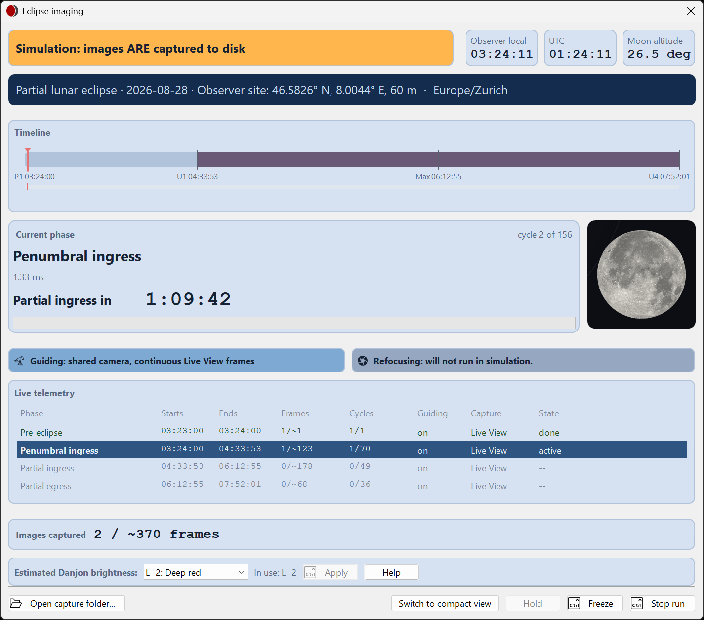
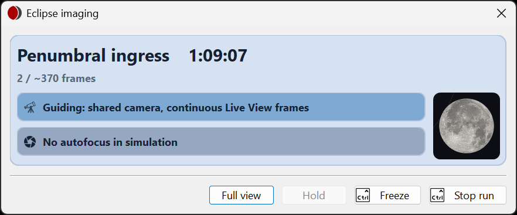
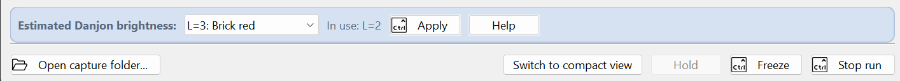
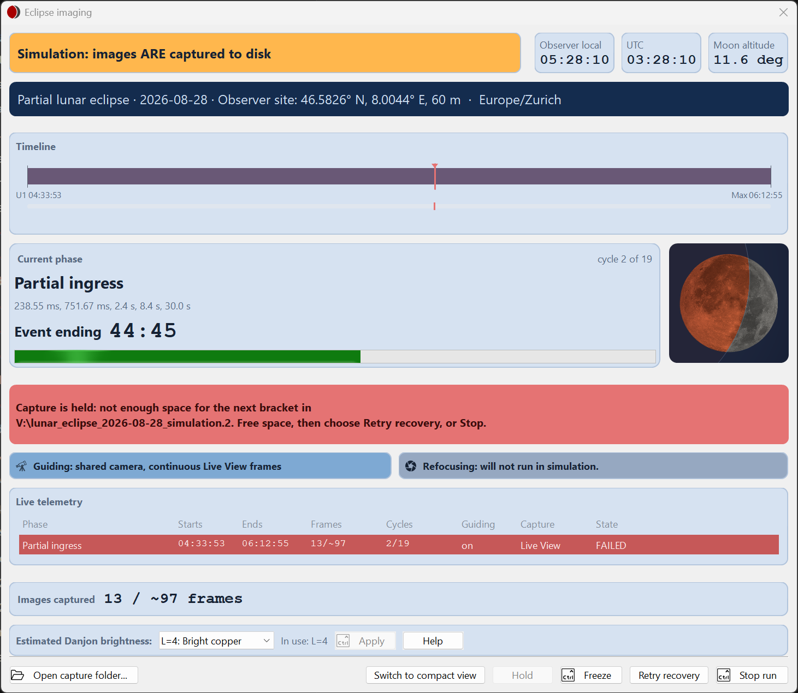
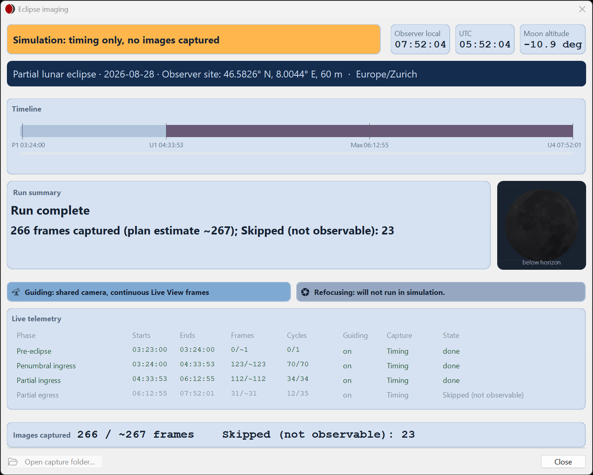

The run console
Monitor phase timing, delivered images, guiding and recovery during the run.
Read the full view
The console shows the mode and run identity, clocks and timeline, current phase and recipe, next phase/countdown, guiding and refocus status where applicable, capture telemetry and totals. Check the mode first so a rehearsal is never mistaken for a live event.

Watch the delivered-image count and missed work as well as the timeline. A moving clock does not prove files are being saved. Use the capture-folder button to inspect output.
When the Moon is below the observable altitude, its sets are skipped: the recipe reads Skipped (not observable), and the console counts these sets separately from missed cycles, which are sets the run could not capture.
The guiding line says how guiding runs. With a physical guiding camera and Pause guiding during exposures ticked, it reads "Guiding: separate camera, paused during each imaging set": PHD2 pauses for each set and resumes between sets, or before a set ends with Resume guiding early. If the run paused PHD2, HelioMaker resumes it when the run ends, when you stop the run and when HelioMaker exits; PHD2 is never left paused.
Compact view
Switch to compact view reduces the console to its essential status. Return to the full view when you need detailed telemetry or to understand an alert. A completed run returns to its full summary.

Run controls
| Control | Effect |
|---|---|
| Freeze / Unfreeze | Ctrl+click to stop or resume the simulation clock. Available only during rehearsal. |
| Hold | Disabled in the current release pending further integration testing. |
| Retry recovery | Appears when the reported fault offers a retry. Correct the reported condition and use this action. |
| Stop run | Ctrl+click to stop the run and end capturing. Read any ensuing confirmation. |
| Close | Replaces Stop run after completion and closes the completed-run console. |
Danjon L is hard to predict. When the eclipse turns out darker or brighter than planned, choose the new value under Estimated Danjon brightness in the full view and hold Ctrl while you click Apply. The change takes effect from the next imaging set; the set being exposed keeps its exposures. Each phase still to come gets the set interval Plan preferences would give it at the new value, so sets may start further apart or closer together. The plan itself keeps its original value, and the run summary lists every change. In a rehearsal, the simulated Moon keeps the plan’s brightness.
Beside the list, In use shows the value the run is using. The list keeps your choice until you apply it, so the two can differ: before you apply, and after a change is refused, when a line under the row says why.

Handle an alert
Read the alert’s affected device and requested action. Restore the intended camera or guiding connection, and wait for recovery status. Use Retry recovery when offered. Verify that capture progress and saved files resume; recovery cannot restore images missed during the interruption.

Storage holds
If the drive fills or cannot be checked, capture is held before the next set, and the alert says why, for example "Capture is held: not enough space in D:\Capture (12 KB free, 2.1 MB needed). Free space, then choose Retry recovery, or Stop." HelioMaker rechecks every 30 seconds and resumes capture by itself once the next set fits; Retry recovery rechecks at once. While a check runs, the alert reads "Checking free space...". With the shared camera in Live view, guiding continues during the hold.
If the last capture does not finish
After Stop run, HelioMaker waits up to a minute for SharpCap to confirm that its last capture ended. If it does not, the console says: "Run stopped. SharpCap did not confirm within a minute that its last capture ended, and it appears to be stuck." HelioMaker then keeps the camera, mount and guiding reserved until SharpCap confirms or is closed, and frees them by itself; the console says when they are free again. Check the camera cables. If SharpCap still does not respond, close SharpCap, wait until it has closed completely, then relink HelioMaker to SharpCap. Until then, a new eclipse run or System benchmark is refused.
After the run
When the run ends, the phase card becomes the run summary: Run complete when the selected phases finished, Event ended when they finished after the eclipse's last contact (P4), or Run stopped when you stopped it. It gives the frames captured against the plan's estimate, for example "412 frames captured (plan estimate ~420)", and any skipped sets.
Review the completed summary, total images, missed work and any errors. Open the run folder, inspect representative files from the available phases and preserve the output and logs before changing the setup.

Files are placed beneath the main-window Capture Folder in an event/run folder derived from the base filename, eclipse date and run mode. Rehearsal output uses simulation folders; live output uses a live folder and a numbered suffix when needed. Use the console’s folder action to locate the actual run.